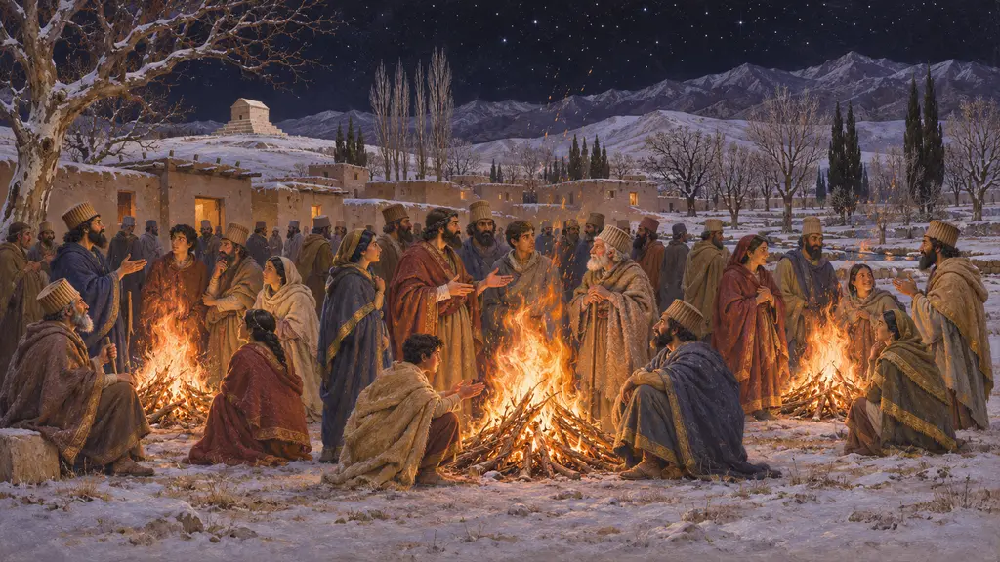
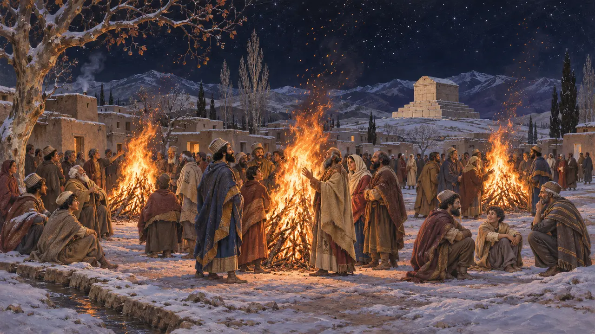
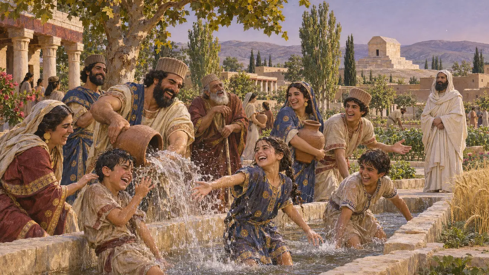

Sadeh and Tiragan
Feasts from a later Iran
Midwinter bonfires and a midsummer water feast are real parts of the Iranian year, but no one can place them this early. They're in the game because they're beautiful and because the Iranian year deserves to be shown, labelled as what they are.
في اللعبة: The midwinter fires and the water feast cost little, give little, and tell you plainly they come from later tradition.

Sadeh
أسطورة لاحقةBiruni and Gardizi, about 1000 CE, describe bonfires fifty days before Nowruz. Ferdowsi has Hushang discover fire on that night. Web pages that date it to the Achaemenids give no ancient source, and we found none.
Biruni, al-Athar al-Baqiya; Gardizi; Iranica, "Sada"

Tiragan
أسطورة لاحقةTishtrya the rain star is old: he has an Avestan hymn, and Persians of this age have names like Tiribazus. His midsummer feast with water thrown at friends is known from much later. The story of Arash shooting his arrow to fix Iran's border attaches to it, and yes, that's your advisor's name.
Yasht 8; Iranica, "Festivals i"
Why keep them?
متنازع عليهOur rule is to mark what's attested from what's later, and the player can read which is which in the tooltip. A game that left these out would teach that they don't matter. A game that called them Achaemenid would teach something false.
docs/design/RELIGION.md
المصادر
- Encyclopaedia Iranica, "Sada"
- Encyclopaedia Iranica, "Festivals i"